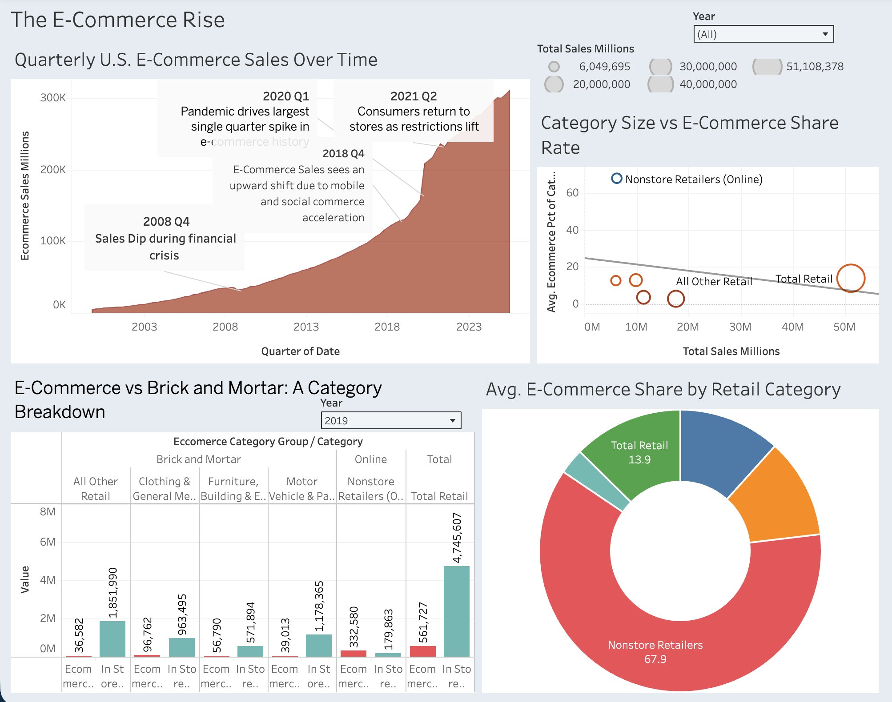
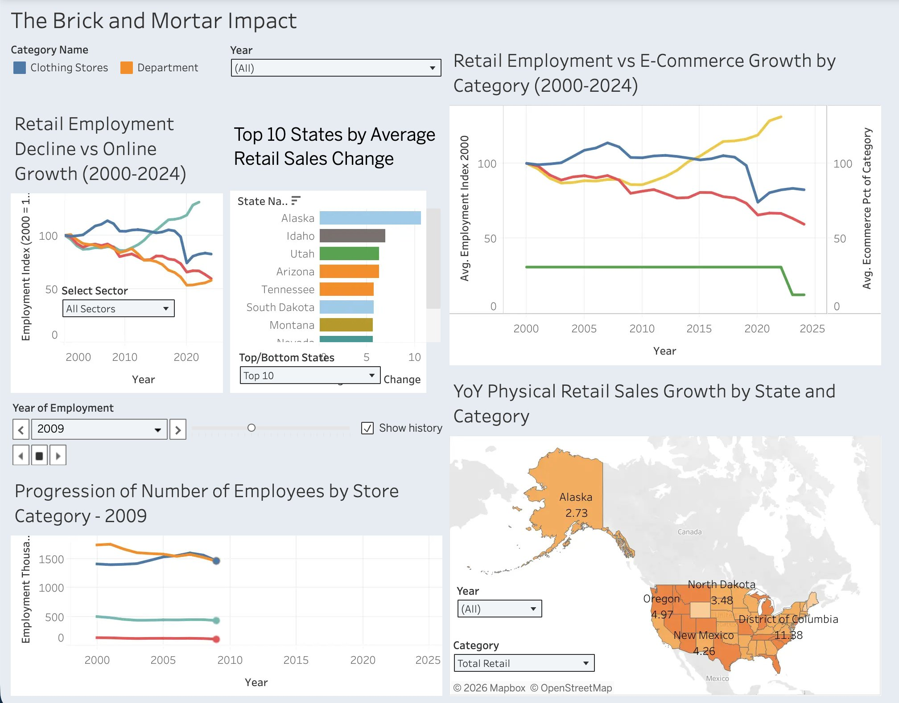

Financial analyst with 4 years at Citibank serving as a trusted partner to business leaders, using data-driven insights to support strategic decision-making. Experienced in financial reporting, budget forecasting, variance analysis, and automation at a Category I financial institution. Pursuing an MBA in Data Analytics at USF.
I worked as a Financial and Data Analyst at Citibank for 4 years, independently managing financial reporting, analysis, and accounting processes across complex portfolios. I served as a trusted financial partner to Directors and Senior Managers, providing data-driven insights to support strategic decisions and keeping every output audit-ready.
I was also the team's subject matter expert in automation, building 25+ KNIME automation workflows that cut manual workload by roughly 40% and improved reporting accuracy by about 80%. My technical stack spans SQL, Python, Power BI, Tableau, Excel, and KNIME. I'm currently completing an MBA in Data Analytics at USF, wrapping up in May 2027.
Outside of work, I'm exploring AI tools and personal research projects. I also build and maintain this portfolio site using AI-assisted development. I spend time on piano, puzzles, writing, yoga, and painting. I like having a lot going on.
Roles that shaped how I think about data, operations, and working under real constraints.
Analytics and data projects with documented methodology, real outputs, and business-readable takeaways.

The E-Commerce Rise

The Brick and Mortar Impact
Tools I reach for regularly, what I use them for, and where I'm growing.
I'm a curious, detail-oriented analyst who likes figuring things out — whether that's a messy dataset, an automation opportunity, or a business question nobody has thought to ask yet. If you're looking for someone who brings both analytical rigor and creative thinking to the table, let's talk.